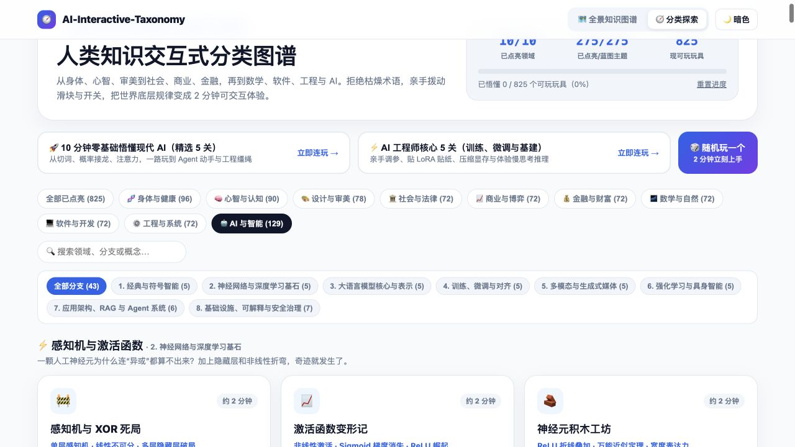

Website / interactive learning
Human Knowledge Interactive Atlas
Explore disciplines around human experience
Explore ten fields through interactive activities, from body, mind and design to society, business, science and AI.

What it is
Knowledge is organized around people in three rings: inner life and expression, collaboration and value, and science and building. Expand domains and branches in the overview or switch to category exploration, search topics, open activities within the site and track your progress.
Features
- Ten core fields organized into three concentric knowledge rings
- Overview and category views with expandable domains, branches and topics
- Explore abstract mechanisms through sliders, switches and visual feedback
- Curated AI learning sequences, random discovery and in-site activities
- Topic search, light/dark themes and locally saved exploration progress
Screenshots
